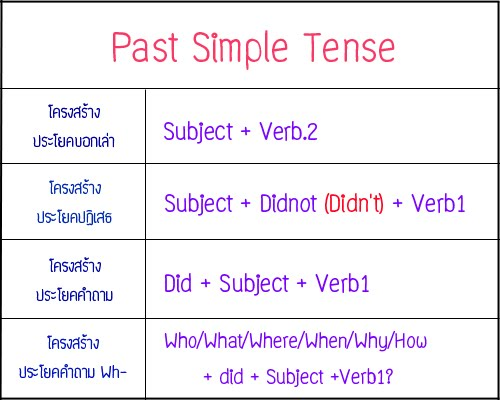

Past Simple Tense
Past Simple Tense ใช้พูดถึงเหตุการณ์ที่เกิดขึ้นในอดีตและจบสิ้นลงไปแล้ว โดยมักจะมีการระบุช่วงเวลาไว้ด้วยว่าเกิดขึ้นเมื่อไหร่

โดยหลักการเติม –ed มี 5 ข้อ ดังนี้ คือ
1.) กริยาทั่วไปมักจะสามารถเติม –ed ได้เลย
2.) กริยาที่ลงท้ายด้วย e ให้เติม d ได้เลย
3.) กริยาที่ลงท้าย ด้วย y และหน้า y เป็นพยัญชนะ ให้เปลี่ยน y เป็น i แล้วเติม ed
ข้อยกเว้น ถ้าหน้า y เป็นสระ ให้เติม ed ได้เลย เช่น
4.) กริยาที่มีพยางค์เดียว มีสระตัวเดียว และลงท้ายด้วยพยัญชนะที่เป็นตัวสะกดตัวเดียวให้เพิ่มพยัญชนะที่ลงท้ายอีก 1 ตัว แล้วเติม ed
5.) กริยาที่มี 2 พยางค์ แต่ลงเสียงหนักพยางค์หลัง และพยางค์หลังนั้น มีสระตัวเดียว และลงท้ายด้วยพยัญชนะที่เป็นตัวสะกดตัวเดียว ให้เพิ่มพยัญชนะที่ลงท้ายอีก 1 ตัว แล้วเติม ed